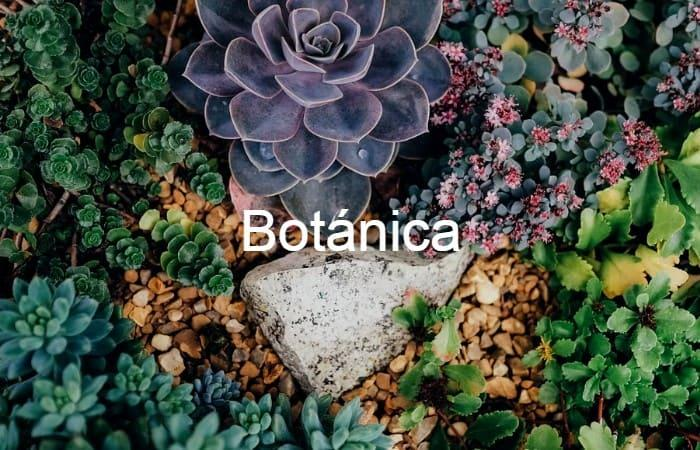

¿Que es la botanica?

La botanica es la rama de la biologia que se encarga de el estudio integral de todas las plantas, su descripción, clasificación, distribución y relaciones con otros seres vivos, pero también otros organismos emparentados, que no son plantas: las cianobacterias, los hongos (de los cuales solemos conocer la parte visible, las setas) y las algas.
La botánica estudia las plantas en sentido amplio, abarcando las categorías taxonómicas de las plantas sin flores (criptógamas), las plantas sin flores y sin vasos (briofitas), las plantas sin flores y con vasos (pteridofitas), las plantas con flores (espermatofitas), las plantas con flores y sin fruto (gimnospermas) y las plantas con flores y con fruto (angiospermas), dentro de la clasificación clásica de los organismos vegetales.
Ramas de la botánica
Al ser una rama de la bilogia que estudia y abra tantos temas y organismos, esta se divide en ramas y subramas como lo serian:
Botánica pura
Es la rama que estudia las plantas desde un punto de vista teórico y estructural. Esta rama estudia el desarrollo, tipos y funciones dentro de la botánica. A su vez, se divide en 3 subramas:
-
Morfología: dedicada a la estructura de los vegetales.
-
Citología e Histología: estudio de las celulas y tejidos, respectivamente.
-
Organografía: estudio de los órganos.
-
Palinología: estudia granos de polen y esporas.
-
Embriología: abarca el desarrollo y crecimiento.
-
-
Botánica general: estudia las características estructurales, morfológicas y fisiológicas de las plantas, a través de varias disciplinas.
-
Fisiología
-
Genética
-
Sociología
-
Ecología
-
Evolución
-
Filogenia y Fitopatología
-
-
Botánica especial: dedicada a áreas específicas, y se divide en cinco disciplinas.
-
Sistemática o Taxonomía
-
Fitogeografía o Geobotánica
-
Paleobotánica
-
Botánica molecular
-
Teratología vegetal
-
Botánica aplicada
Esta rama se enfoca en el estudio de usos, aplicaciones y utilización de las especies para producir remedios, cosméticos, productos agropecuarios, entre otros. Se divide en cuatro subramas principales:
-
Farmacéutica
-
Agrícola
-
Forestal
-
Molecular
TEMAS BIOLOGÍA
-
¿Porque es imporante la botanica?
A través del manejo, optimización de cultivos y especies, la botánica cumple funciones importantes en la vida diaria. En la alimentación, los vegetales cumplen una función nutricional no solamente para los seres humanos, sino también para otras especies animales.
La interacción entre especies y su preservación permite el cuidado del planeta y la conservación de los diferentes ecosistemas . Además del estudio científico, la botánica tiene importancia en el aporte de materias primas para la industria farmacéutica, materiales de construcción, industria de los alimentos, entre otras.